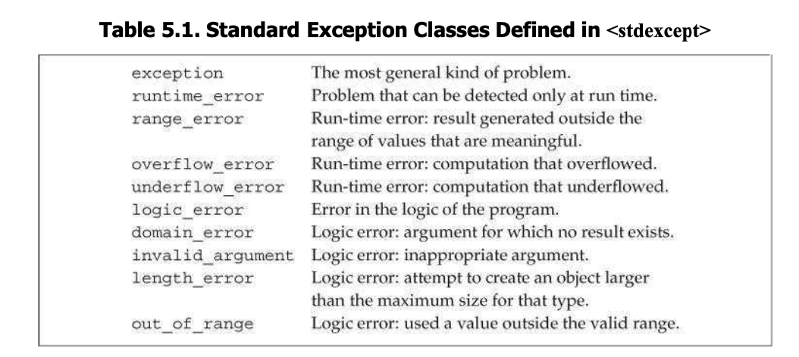

C++ Primer Chap 5 Statements
5.1 Simple Statement
Expression Statement: when add a semicolon after a expression. AExpression Statementusually have side effects, otherwise, it is useless.Null statementis a single semicolon. Anull statementis useful when the language requires a statement but the program’s logic does not.Compound Statement: usually refer to asblocl( “{ }” ). A block is ascope.
5.2 Statement scope
- Variables define inside
while,if,switchandforstatement are only valid inside the statement.
5.3 Conditional Statements
- C++ provides two conditional statements. The
ifstatement and theswitchstatement. ifstatement
if (condition)
statement
else
statement2
* Condition must be enclosed in parentheses. Condition can be an expression or an initialized variable declaration. Statements can be replaced by blocks.
* `Dangling else`: each `else` is matched with the closest preceding unmatched `if`. We can also make `else` part of outer `if` by enclosing the inner `if` in a block.
Switch statementprovides a convernient way to selecting among a number of fixed alternative.
char cn;
switch (cn) {
case 'a':
++acnt;
break;
case 'e':
++ecnt;
break;
}
* A `switch` statement executes by evaluating the parenthesized expression that follows the keyword `switch`. The expression is converted to `integral type`, the result of expression is compared with the value associated with each `case`.
* If the expression matched the value of a `case` label ("case 'a'"), execuation begins with the first statement following that label.
* After a `case` label is matched, execuation continues across all the remaining `case`s.
* A `case` label must be a `constant integral` expression.
* Each `case` label can only contain one value (`case 1,2,3:` is an error).
* Don't forget `break` after a case label.
switch(ch) {
case 'a':
++acnt;
case 'e':
++ecnt;
case 'i':
++icnt;
}
// In this case, when ch is matched with 'a', then all acnt, ecnt and icnt increments.
switch(ch) {
case 'a':
case 'e':
case 'i':
++vowelcnt;
} // Any case of 'a', 'e' and 'i' will increment vowelcnt.
* `default` label: The statements following the `default` label are execuated when no `case` label matches the value of the `switch` expression.
* Execuation in a `switch` can jump across `case` labels. If such jump bypasses initialization of variable (both implict and explict initializations), then the complier will error. (One remedy is add curly braces to narrow the scope of initialization.)
5.4 Iterative Statement
whileandforstatement test the condition before execuating the body. Thedo whileexecutes the body and then tests its condition.
while statement
while (condition)
statement
- Variables defined in
whilecondition orwhilebody are created and destory on each iteration.
for statement
traditional for statement
for (initializer; condition; expression) {
statement
}
* `initializer` must be a declaration statement, an expression statement or a null statement.
* 1. `initializer` will be execuated only once. 2. If condition eveluates as `true`, then the for boby execuates; otherwise, the loop terminates. 3.After `for` body execuates, `expression` execuates.
* `inti-statement` can defined several objects, but they must be separated by `comma`, so they must have same base type.
* `omiting parts of the for header`: A `for` loop can omit any (or all) of `init-statement`, `condition`, or `expression`, but we cannot omit semicolon. Note that, omiting `condition` is equilavent to writing `true` as condition.
- Range
forstatement
for (declaration : expression)
statement
//What a range for really does
for (auto beg = v.begin(), end = v.end(); beg != end; ++beg) {
//statements
}
* `expression` must represent a sequence. `declaration` defines a variable.
* We usually use keyword `auto` as type in declaration.
* If we want to mutate elements, we should use reference type.
do whilestatement
do
statement
while (condition); // A do while ends with a semicolon.
* Since `do while` execuate statement before condition, then it is not allowed to declare variable in a do condition.
* If we add curly braces in `do` statement, then variables defined in `do` statement are not accessible in `condition` (scope problem).
5.5 Jump Statement
- Jump statement interrupt the flow of execution. C++ offers four jumps:
break,continue,gotoandreturn. - The
breakstatement terminates the nearest enclosingwhile,do while,fororswitchstatement. - A
continuestatement terminates the current iteration of the nearest enclosing loop.- A
continuestatement can appear only inside afor,whileordo while, andswithif it is embedded inside an iterative statement. - After
continue, execution continues by evaluating theconditioninwhileanddo while; and by evaluating theexpressionin for loop.
- A
- A
gotostatement provides an unconditional jump from thegototo a another statement in the same function.- As
switchstatement, jump bypasses an initialization is illegal
- As
goto label;
end: return // labeled statementl may be the target of a goto
goto end;
int ix = 10;
end:
ix = 42; //error, bypasses an initialization
5.6 try Blcoks and Exception Handling
Exceptions are used to handlerun-timeerrors.Exceptionhandling is generally used when one part of a program detects a problem that it cannot resolve.throw- A detecting part (where problem arises) of a program uses a
throwexpression to raise an exception. Athrowconsists of the keywordthrowfollowed by an expression (an object,runtime_erroris defined instdexceptheader.) - Throwing an
exceptionterminates the current function and tranfers control to a handler.
- A detecting part (where problem arises) of a program uses a
if (item1.isbn() != item2.isbn()) {
throw runtime_error("Data must refer to same ISBN");
}
tryblock The general form of atryblock is
try {
program_statements
} catch (exception_declaration) {
handler-statements
} catch (exception_declaration) {
handler-statements
} //here
* A `catch` consist of three parts: the keyword `catch`, the declaration of an object within parentheses (`exception declaration`), and a block of `exception` handler.
* After a catch block execuating, the control flow will falls through the closing brace of `try` (__here__ in above code).
* Objects in `stdexcept` header have member function `.what()`, it prints the error messege of a exception.
* E.g. A() calls B(), B() call C(). C throw an exception, it will search a catch hendler in B, but if search fails, function B will terminates, and search catch hendler in A. Ans so on.
Variables defined in try block is inaccessible in other blocks – in particularm they are not accessible to the catch clause.
- Standard Exceptions
- The
exceptiondefines a general kink of exception class namedexception. It communicates only that an exception occured but no additional info. We can create, copy and assign any type of exceptions toexceptiontype (e.g.runtime_erroris a derived class ofexception) - The
stdexceptheader defines several general purpose exception classes. - The
newheader defines thebad_allocexception type. - The
type_infodefinesbad_castexception type. - We can default initialize
exception,bad_allocandbad_castobjects (but we cannot initialize them). Other exceptions don’t suppot default initialize, we can only initialize them (opposite way). 
- The
Zhi Wang
Student at University of Waterloo
My research interests include distributed robotics, mobile computing and programmable matter.